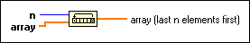

Rotate 1D Array Function
Owning Palette: Array VIs and Functions
Requires: Base Development System
Rotates the elements of array the number of places and in the direction indicated by n.
The connector pane displays the default data types for this polymorphic function.

 Add to the block diagram Add to the block diagram |
 Find on the palette Find on the palette |